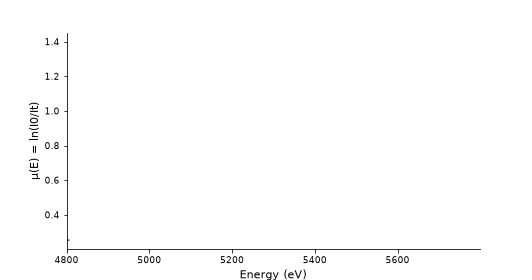

Spectra
XAFS / EXAFS
Oxidation state, neighbours and bond lengths from X-ray absorption.

Steps
Open Files...Open beamline files (choose the I0, It, If or Iref columns once) or an Athena project. Merge repeated scans, align and calibrate to the foil.Auto E0Normalization: a pre-edge line and a post-edge curve; the edge step makes the jump 1.Apply to AllBackground (AUTOBK, Rbkg about 1 Å) leaves χ(k), the EXAFS wiggles.- The Fourier transform |χ(R)| shows the neighbour shells (R is shorter than the real distance by about 0.3 to 0.5 Å until it is fitted).
LCF...XANES: LCF with reference spectra, pre-edge peaks, oxidation state from the edge, PCA and edge position against temperature.Open EXAFS Fit PageEXAFS shell fits are on the EXAFS fit page next to this one: FEFF paths, guess/def/set parameters and fits of one or many data sets.
How it works

Worked example
Ti K-edge of an MXene heated in air to 500 °C (example data): its half-step edge, 4971.1 eV, has hardly moved from Ti3C2Tx (4969.8 eV; anatase is at 4978.9 eV), yet LCF gives 0.61 Ti3C2Tx + 0.39 TiO2 (R = 3e-5): the edge position alone hides the oxide, the whole XANES shows it.
In TIRTIL: How to (⌘/) › Try It With Example Data loads this example.